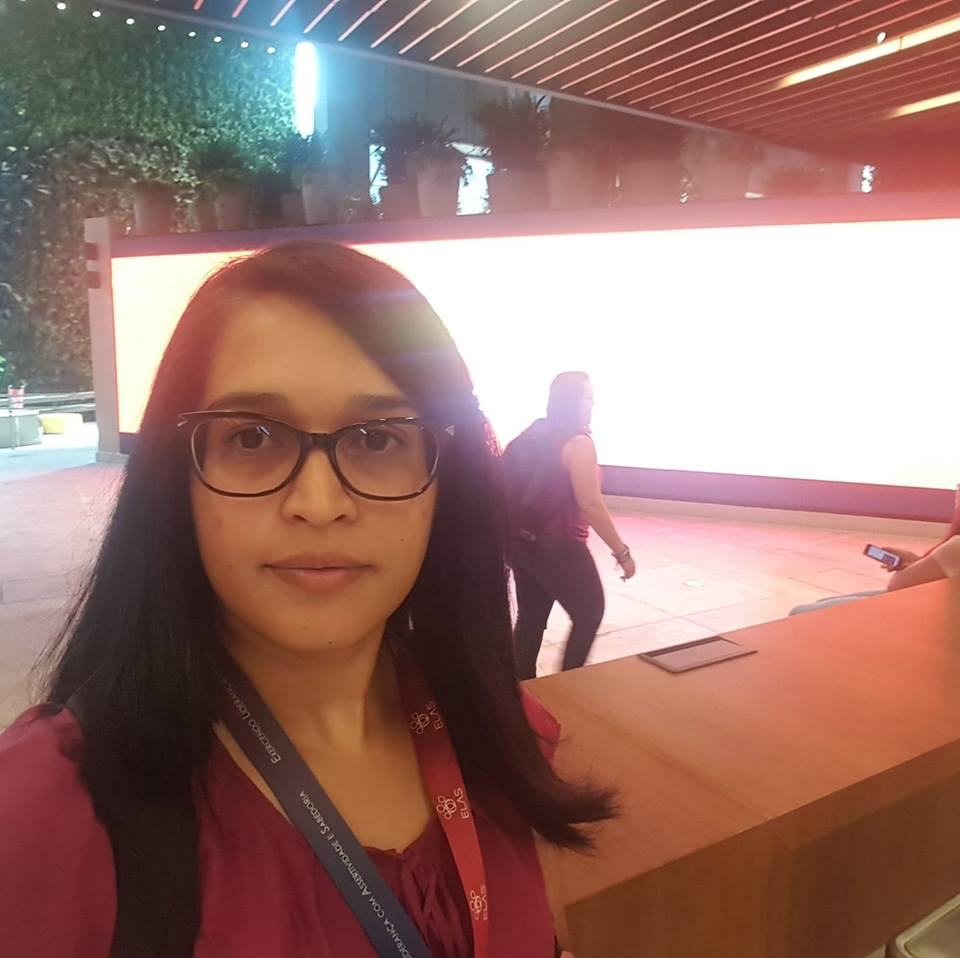

Criado por Alda C. Lopes do Monte como atividade no curso Hiring Coders da Gama Academy 2020 São Paulo - Abril de 2020

Alda C. Lopes do Monte /alda-monte-pmp-31a626b1 |
Estou há 16 anos atuando em engenharia de sistemas no setor financeiro. Durante este período participei principalmente na definição de solução e desenvolvimento backend de sistemas em linguagem Cobol. Desde Abril de 2019 sou coordenadora de equipes de engenharia de TI. Antes de me tornar coordenadora, fui especialista por 1 ano e meio. Possuo conhecimento amplo em empréstimos e participei ativamente em projetos de: Crediário, Capital de Giro, Consignado, Desconto de Duplicatas e Cheques, Antecipação de Recebíveis, Antecipação Fornecedor, Vendor, entre outros. Gosto de entender em profundidade as necessidades dos clientes e estudar detalhadamente a melhor solução, sempre observando os riscos para garantir qualidade e eficiência. Aprender sempre e compartilhar conhecimento faz parte da minha identidade, por isso fiz o teste na Gama Experience, mesmo não imaginando que seria selecionada, pois meu backgroud é Maiframe (alta plataforma). Decidi seguir com o treinamento porque sempre tive interesse em aprender novas linguagens e e tecnologias de desenvolvimento para baixa plataforma, pois na liderança de equipes considero ser fundamental entender o dia-a-dia do time na prática e estar atualizada com todas as tecnologias que eles utilizam ou utilizarão, para assim apoiar e direcionar no desenvolvimento de cada um, além de ter maior resiliência ao identificar dificuldades. |
Criado por Alda C. Lopes do Monte como atividade no curso Hiring Coders da Gama Academy 2020 São Paulo - Abril de 2020